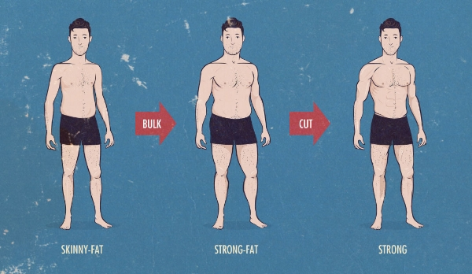

In this video, bodybuilder Mario Tomic will be sharing tips to do if you are "Skinny-Fat"
Here's what your body type says about you
“Skinny fat” is a term that refers to having a high percentage of body fat and a low amount of muscle.
It is misconcepted by people that small or thin bodies are an indicator of good health.
It’s usually referred to having less muscle tone and strength as well as a relatively high body fat percentage, despite a person having a normal range of BMI.
it’s an imbalance between the amount of muscle and fat you have that can make you appear fat even at your ideal weight.

What are some people 'skinny fat'?
The “skinny fat look” appears when a person loses weight rapidly, usually by severe calorie restriction and heavy amounts of cardio.
It is unhealthy and the weight loss rarely stays off when you severe calorie restrict yourself.
Should a person who is skinny fat do cardio in large amount?
The answer is No. Endurance training interferes with muscle growth.
Cardio can be great for you in smaller amounts, when combined with
high-intensity interval training (HIIT) and weight lifting.
Resistance training is better in this case as it promotes fat loss while preserving muscle mass and metabolic rate.
in other words,cardio will help you lose weight, but resistance training will help you lose fat.
Why would someone be skinny-fat?
Lack of exercise
unhealthy or extreme diets
insufficient protein intake
High glycemic carbs
Testosterone
How to avoid being skinny and unhealthy?
Do regular resistance training to build more lean muscle mass.
 Log in
Log in